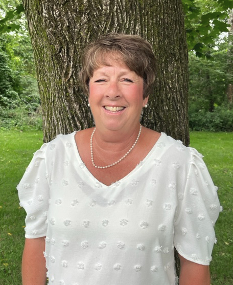
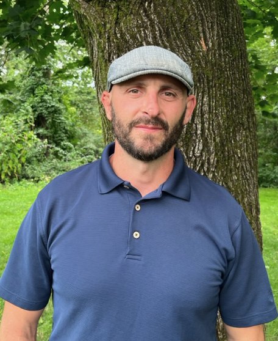
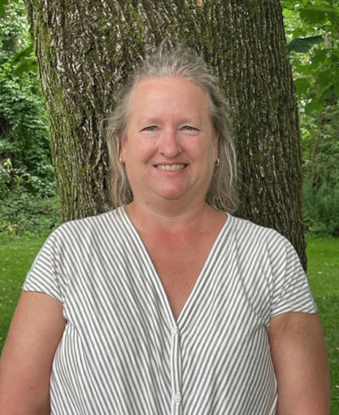
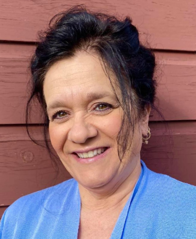
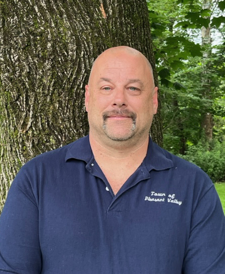

Meet the Team

Supervisor
Mary Albrecht
- A proven track record of public service
- Dedicated to doing what's right for all our residents
- Willing to take on the tough issues
- A problem-solver and consensus-builder

Town Council
Dan Degan
- 17+ year resident
- Pleasant Valley Recreation Coach and Food Bank Volunteer
- 20+ years in Renewable Energy, construction & project management
- Priorities - Civil and Inclusive Government, Parks, Town Projects, Access for all
- Endorsements: Working Families Party, CWA local 1120, Dutchess County Central Labor Council

Town Council
Merry Meyer
- Wife-Mother-Volunteer
- 25+ Year resident
- Effective and Inclusive Advocate
- A Project Specialist
- Fiscal Oversight Expert

Town Clerk
Mary Beth Muir
- A proven track record of public service
- Deputy Town Clerk/Town Clerk/Tax Collector since 2011/2019
- Veterans Advocate and Military Mom
- Community Activist - Festival of Lights, PV Weekend Parade, Earth Day Cleanup
- Founding member Hometown Heroes Banner Committee

Highway Superintendent
John Baxter
- Successful incumbent
- 30 years construction experience
- Captain for Pleasant Valley Fire
- Endorsed by Teamsters Local 456, CWA Local 1120, Dutchess County Central Labor Council